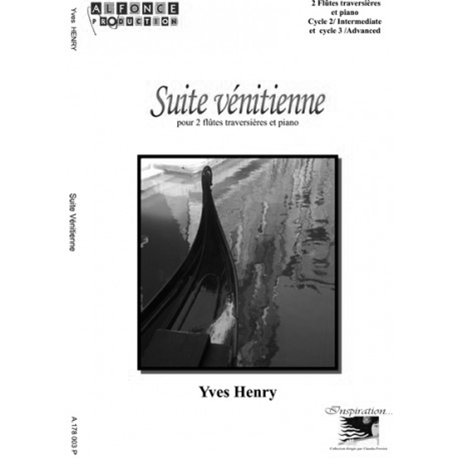
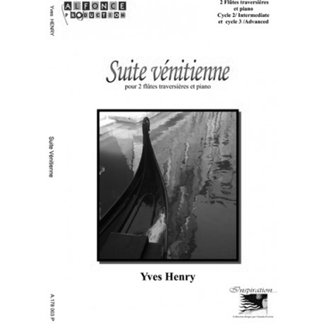
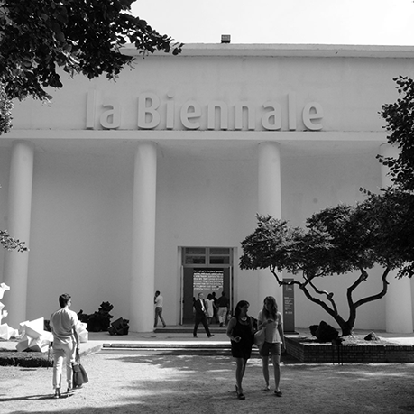

/ Artist Collection /
Sophie Calle
B. 1953, PARIS
Born in Paris in 1953, Sophie Calleis1 is the daughter of oncologist2and collector Robert Calle3 and book critic and press attaché Monique Findler. After graduating from secondary school at age 17, Calle eschewed further schooling and instead spent seven years traveling through China, the United States, and Mexico. She never attended art school and often brushes off the label of artist, describing many of her projects as a “private game.” She insists, “I did not think about becoming an artist when I began. I did not consider what I was doing as art.” In her practice, Calle works in photography and installation, combining photos, texts, and videos to weave narratives of private experience, her own and that of others.
Calle’s “private games” began on her return to Paris in the late 1970s, when she decided to follow strangers through the streets while aiming to reacquaint herself with the city.4 She also pursued photography, which she had picked up while living in California, and was inspired by the text-captioned work of American photographer Duane Michals5 (which her father collected). Voyeurism6 and surveillance became Calle’s primary artistic tactics. For her first major project, The Sleepers7 (1979), she invited strangers into her home to spend eight hours in her bed, while she documented their stay with notes and photographs. At the 1980 Bienal des Jeunes in Paris, she presented the photographs and notes in an installation that contrasted the intimacy of the photographs with the banality of textual descriptions written with cool anthropological detachment. The combination of portraiture, Conceptual art, and the public exposure of private experiences became hallmarks of Calle’s subsequent work.
In other early works, Calle reprised the role of the private detective. She followed one of her Parisian subjects on his trip to Venice, spending 13 days recording his activities. The result, Suite Vénitienne8 (1980), was published in a book with an afterword by the French media theorist Jean Baudrillard9, in which he notes in particular the violence and seduction of Calle’s act. The latent aggression of surveillance is also revealed by Calle’s physical trespasses for The Hotel10 (1981), a project in which she rifled through and photographed the belongings of unsuspecting guests while temporarily working as a chambermaid in a Venetian hotel. Baudrillard’s text also highlights the loneliness inherent to Calle’s work: “These are not souvenir snapshots of a presence, but rather shots of an absence, the absence of the followed, that of the follower, and that of their reciprocal absence.”
Calle’s work has also focused on questions of absence and desire in her personal relationships. In 1992, she collaborated with then-boyfriend Greg Shepherd to produce her first work in video, Double Blind11 (1992–94), created during a road trip the couple took from New York to San Francisco. They both carried camcorders and captured their widely different views of the physical landscape and their relationship as well as their shifting senses of attraction and aversion. Calle and Shepherd married in a drive-through chapel in Las Vegas during the trip, but the relationship dissolved soon afterward. A more recent exploration of her personal life, Couldn’t Capture Death, a video of her mother’s last moments before passing away in 2006, was presented in the French Pavilion12 of the 2007 Venice Biennale13. By offering her own emotional and psychological life as a subject of art, Calle invites viewers to meditate on grief, loss, and remembrance.
Calle has shown her work extensively in Europe since the early 1980s, and in the United States since her first one-person exhibition at Fred Hoffman Gallery, Los Angeles, in 1989. Major solo exhibitions include the retrospective M’as-tu vue?14 (Did you see me?, 2003–04) at the Centre Pompidou, Paris, and a 2009 retrospective at Whitechapel Gallery, London. Calle lives and works in Paris.
 1
2
1
2
 3
3
 4
4
 5
6
5
6
 7
8
7
8
 9
9
 10
10
 11
11
 12
12
13
 14
14